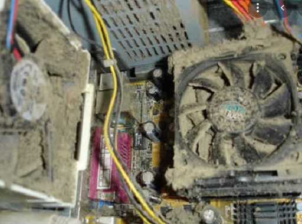
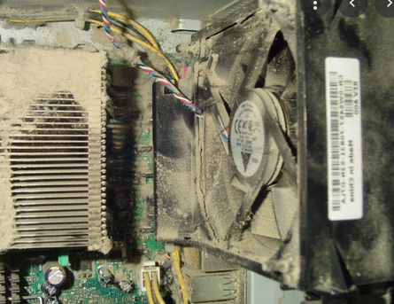
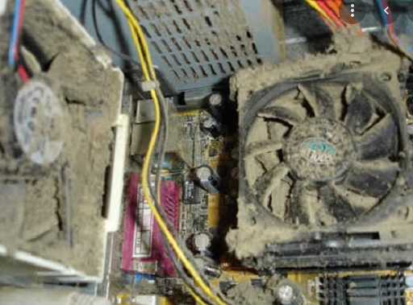
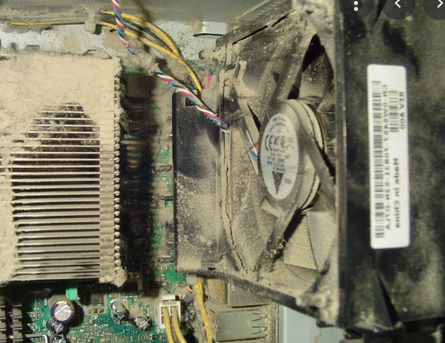
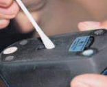
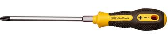
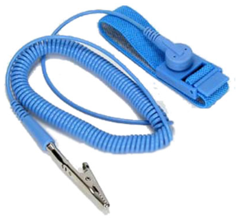
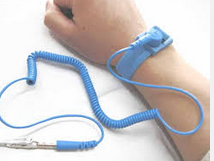
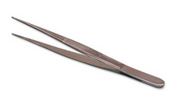

Mantenimiento de sistemas informáticos¶
Un sistema informático (SI) es el conjunto de partes que funcionan relacionándose entre sí para conseguir un objetivo preciso.
¿Qué es el mantenimiento para los PCs?¶
Es el cuidado que se le da al ordenador para prevenir posibles fallos. El mantenimiento incluye técnicas que se aplican a los ordenadores para darle un periodo de vida útil más largo y libre de fallos. Se debe tener en cuenta la ubicación física del equipo ya sea en la oficina, en el aula, en casa, así como los cuidados especiales cuando no se está usando el equipo.
Niveles de mantenimiento¶
Descripción de técnicas auxiliares de mantenimiento de sistemas microinformáticos. Hay tres niveles de mantenimiento:
Nivel de hardware.
Nivel de software
Nivel de documentación.
Nivel de mantenimiento de hardware
Cuida el buen estado de los equipos y periféricos del sistema, los fallos suelen ser por desgastarse de los materiales o por accidentes.
Dentro del mantenimiento del hardware tenemos:
La limpieza de los hardware
Comprueba que funcione todo correctamente (voltaje. temperatura)
Reemplaza o repara los componentes desgastados o que funcione mal
Nivel de mantenimiento de software.
Se centra en las aplicaciones y los datos de tenga el sistema.
Los fallos se dan de forma de pérdida de información, virus, troyanos, gusanos, etc …
Dentro del mantenimiento de software tenemos:
Limpieza de archivos y programas
Actualizaciones de seguridad
Copias de seguridad.
Imaginad que pasaría si se perdieran la base de datos de la facturación de una empresa y ésta no se pudiera recuperar al estar sólo en un ordenador que se ha averiado o eliminado la información accidentalmente o bajándolo a nuestro nivel si perdéis los trabajos que tenéis realizados para entregar en clase.
Nivel de mantenimiento de documentación
Cuando se instala, se mantine o se repara un sistema informativo hay que actualizar la documentación y dejar un registro de todas la tareas de mantenimiento.
Técnicas auxiliares de mantenimiento¶
Consiste en la reparación de alguno de los componentes de la computadora, puede ser una soldadura pequeña, el cambio total de una tarjeta (sonido, video, memoria, entre otras), o el cambio total de algún dispositivo periférico como el ratón, teclado, monitor, etc.
Resulta mucho más barato cambiar algún dispositivo que el tratar de repararlo pues muchas veces nos vemos limitados de tiempo y con sobre carga de trabajo, además de que se necesitan aparatos especiales para probar algunos dispositivos.
Limpieza interna del PC:
Esta tarea busca retirar el polvo que se adhiere a las piezas y al interior en general de nuestro PC. Ante todo debe desconectarse los cables externos que alimentan de electricidad a nuestra PC y de los demás componentes periféricos. Para esta limpieza puede usarse algún aparato soplador o una pequeña aspiradora especial acompañada de un pincel pequeño. Poner especial énfasis en las cercanías al Microprocesador y a la Fuente.
 



Revisar los conectores internos del PC:
Asegurándonos que estén firmes y no flojos. Revisar además que las tarjetas de expansión y los módulos de memoria estén bien conectados.
Limpieza del monitor del PC:
Soplar aire al interior por las rejillas y limpiar la pantalla y el filtro de la pantalla con un paño seco que no deje residuos ni pelusas.
Limpieza del ratón:
Debajo del ratón hay una tapa que puede abrirse simplemente girándola en el sentido indicado en la misma tapa. Limpiar la bolita que se encuentre dentro con un paño que no deje pelusas así como los ejes y evitar que haya algún tipo de partículas adheridas a ellos.
Si es un ratón óptico, mantener siempre limpio el pad (o almohadilla donde se usa el ratón; esto es válido para cualquier tipo de ratón) y evitar que existan partículas que obstruyan el lente.
Los CD-ROM, DVD, CD-RW:
Al contar todos ellos con un dispositivo láser no se recomienda abrirlos si no se está capacitado para hacerlo. Existen unos discos especialmente diseñados para limpiar los lentes de este tipo de unidades.
La superficie exterior del PC y sus periféricos:
Es recomendable para esta tarea una tela humedecida en jabón líquido o una sustancia especial que no contengan disolventes o alcohol por su acción abrasiva, luego de ello usar nuevamente un paño seco que no deje pelusas.
{kind=link}
{kind=link}
{kind=link}
Elementos necesarios¶
Es indispensable contar con las herramientas y material adecuados para el mantenimiento. Entre ellos necesitaremos:
Destornilladores planos y de estrella.
Estos destornilladores son empleados para retirar los tornillos que mantienen fija la tapa exterior que cubre y protege al CPU, dentro del CPU existen algunos componentes que requiere ser extraídos con la ayuda de un destornillador.
Pulsera Antiestática
La pulsera tiene un pequeño metal que hace contacto con la piel de la mano y a su vez tiene conectado un cable en forma de espiral al chasis que se encuentra conectado a tierra por medio de la fuente de alimentación. En el caso de no disponer de una pulsera antiestática, tocaremos tierra de forma regular.
 Pinzas De Punta Fina
Se emplean normalmente para retirar los jumper de los discos duros o unidades de CD-ROM cuando hubiera la necesidad de configurarlos para hacer que el ordenador pueda reconocerlos.
Limpiador de para elementos electrónicos
Se puede utilizar el Alcohol isopropílico también conocido como Propanol, que es el líquido más importante para realizar limpiezas de tarjetas de los equipos (ordenadores, impresoras, monitores, etc.), es un compuesto que tiene un secado demasiado rápido por lo cual ayuda a realizar un trabajo muy eficiente. Es un alcohol que quita la grasa con gran facilidad.
Aspiradora portátil / aire comprimido.
{kind=link}
{kind=link}
MEDIDAS DE SEGURIDAD¶
Antes de continuar detallaremos una serie de precauciones y medidas de seguridad que hay que tener en cuenta en todo mantenimiento
Precauciones con la corriente eléctrica.¶
Los ordenadores trabajan a ±12 y ±5 voltios, que resultan inofensivos, pero para obtener esa tensión de la red eléctrica (220 voltios aprox.), necesita transformarla. Debido a esto, en el interior de la maquina hay varios puntos por los que circula la misma tensión de la red. Estos puntos son:
El interior de la fuente de alimentación.
El cable que va desde la fuente hasta el interruptor.
Los conectores.
Por lo tanto hay que tener muy en cuenta que no se debe montar y desmontar con el ordenador enchufado a la red eléctrica.
Para no dañar algunos componentes como la placa base ó la memoria RAM, es necesario descargar la electricidad estática que pueda tener nuestro cuerpo. Para eso hay unas pulseras hechas de cinta conductora y provistas de un cable fino con una pinza que se coloca a tierra, y que es recomendable tener puesta mientras se tocan los equipos. Otra solución consiste en tocar con una mano, antes de proceder, la toma de tierra.